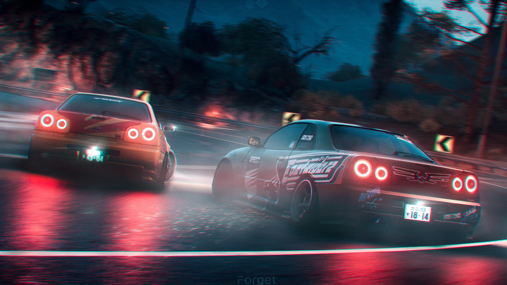

Best Drifting School in Pakistan
In this Country of 225 Million peoples live.Our new generation need right activities.The Drifting is a right activity for our new generation.This is a very good activity to lead them in a good professions.
